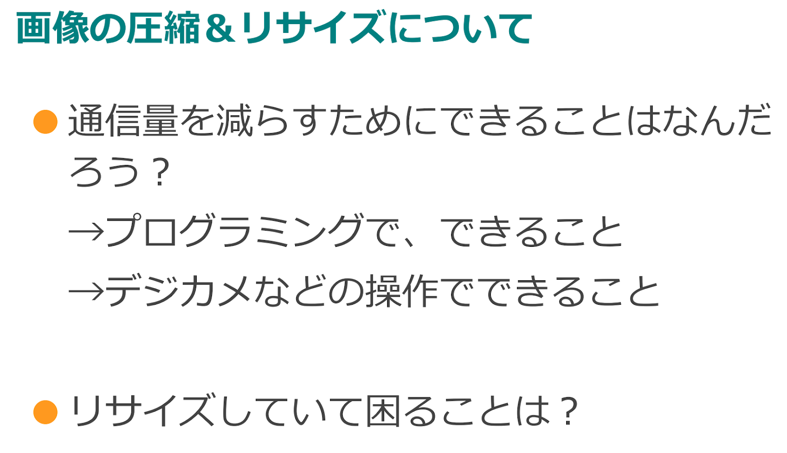

スライド | 指導者 |
ステージ1をプログラミングしてみる。 サンプル画像が表示されます。 Lesson3で学習したプログラミングを 覚えていれば大丈夫ですね？ | |
ステージ2では画像を圧縮し、リサイズします。 →どちらの方法もデータ量を減らすことができます。 圧縮は...面積に変化はありませんが、その画像を 構成する点（ドット）の数を減らします。 ＝解像度が下がる （拡大すると画像が粗くなったのがわかります） リサイズは...大きさを変更すること。 当然、A4サイズの写真をハガキ大のサイズに 変更すればそのデータは小さくなりますよね。 同じようで少し違うので、理解しておきましょう。 ※チャットの用途であればどれくらい画像を圧縮しても大丈夫か？ （何が写っているか判別できるか？数値を変更しながら考えて見る） | |
＜補足＞ 画像の圧縮率について理解を深めるために、 ステージ2で解像度を10％以下に下げてみると、 画像が変化しわかりやすくなります。 ※サンプル画像が表示されないことがあったら、ブラウザのキャッシュクリアをクリアしてみてください。 | |
ステージ3では条件分岐とリサイズの考えを 合わせてプログラミングしてみましょう。 ちなみに写真の縦横比のことをアスペクト比と 言います。 |
スライド | 指導者 |
ステージ4に取り組んでみましょう。 | |
【生徒への問い】 前者の圧縮してから送信の方が、ネットワーク上のトラフィック（渋滞）に影響しない。 でも、圧縮すると画像が粗くなる！ 画質と通信量どちらを優先する？ 例）YouTubeで多少画像が粗くても内容がわかれば低解像度でもOK →その方が通信量が節約できる....読み込みで遅延しない... | |
※ワークシートに何％くらいに圧縮して送信するか記入 問）何でその数字にしたの？ →何を優先するのか、画像の美しさとデータ量が反比例であることを理解しているか？ |
変数【送信画像】に選んだ画像を保存→表示の順序 | |
|
 | ステージ4〜6を通して圧縮・リサイズについて考えてみよう。 （ワークシートを見ながら） 通信量を減らす方法を考えよう。 リサイズするときの問題点は？ |
（補足問題） この2つのプログラムの違いは何でしょう？
やっていることは同じように見えるがどちらの方が良いでしょう？ ※送る前に圧縮してファイル量を減らす |
スライド | 指導者 |
受信についてはテキストの時と同様 | |
送信時と同様 （余裕があれば）受信した画像ファイルを リサイズや圧縮する理由は？ A）送信した人がリサイズして送らないと チャット画面に収まらないetc... | |
Lesson4の総まとめ ただしステージ9でアスペクト比を固定したまま リサイズできるブロックが登場するので説明を |
Lesson3のテキストに続き、Lesson4では画像の送受信を行いました。
画像はテキストよりデータ量が大きいメディアなので圧縮やリサイズについても学習しました。
この考え方は動画を送受信するときにも役立つ考え方です。しっかり理解しておきましょう。
次回Lesson5は今までの総まとめとして、テキストと画像を送受信できるチャットツールをプログラミングしていきます。